第 1 / 12 页

-1 .
2021 年全国硕士研究生
招生考试思想政治理论试题详解
一、单项选择题
1.【答案】B
【考点点拨】马克思、恩格斯经典著作《德意志意识形态》的意义
【试题解析】1844 年8 月底，马克思和恩格斯在巴黎会面。此前他们曾有过一面之缘，
但这次会面使他们发现彼此的基本观点完全一致，并从此开始了毕生的合作。他们先是
在巴黎合写了《神圣家族》一书（第一次合作的著作），接着又在布鲁塞尔合写了《德
意志意识形态》。《德意志意识形态》首次系统阐述了历史唯物主义的基本观点，实现
了历史观上的伟大变革。B 正确，A 不符合题意。《哲学的贫困》是1847 年马克思为批
判蒲鲁东的《贫困的哲学》而写的著作。这部重要的著作是马克思主义学说最早发表的
文本。马克思主义的新世界观与马克思主义经济科学的“决定性的东西”，都是通过这一
文本第一次公开问世的。C 错误。《共产党宣言》发表于1848 年，标志着马克思主义的
公开问世，D 错误。
2.【答案】A
【考点点拨】历史规律与自然规律
【试题解析】历史规律与自然规律既有共同点又有区别。作为规律，历史规律与自然规
律都是客观的, 都是事物内部的、本质的、必然的联系，都不以人的意志为转移。历史规
律与自然规律的不同点在于,自然规律起作用是自发的，离开了人的活动也同样起作用；
而历史规律起作用离不开人的有目的、有意识的活动的参与。人们之所以能从历史中汲
取经验教训，正是由于历史的发展有着不以人的意志为转移的规律，发挥能动性就能认
识和把握这些规律。A 正确，B 错误。事物的发展是螺旋式上升和波浪式前进的，是前
进性与曲折性的统一，历史的发展同样如此，并不是循环往复的，C 错误。由于受到主
观条件和客观条件的制约，人类今天还不可能完全掌握历史发展的内在规律，D 错误。
3.【答案】C
【考点点拨】社会存在与社会意识
【试题解析】社会存在决定社会意识，这是社会意识对社会存在的依赖性。但社会意识
并非消极被动地受制于社会存在，它既依赖于社会存在，又有其相对独立性。社会意识
的相对独立性是指社会意识在从根本上受到社会存在决定的同时，还有自己特有的发展
形式和规律。主要表现在: 一是社会意识与社会存在发展的不完全同步性和不平衡性。进
步的社会意识可以在一定程度上预见、推断未来，指导人们的实践活动；落后于社会存
在的社会意识则阻碍社会的发展。二是社会意识内部各种形式之间的相互影响及各自具
有的历史继承性。三是社会意识对社会存在能动的反作用。这是社会意识相对独立性的
突出表现。法律法规属于社会意识。作为社会意识的一种特定类型，当法律法规适应技
术进步的要求时，就会对技术进步产生促进作用，反之，就会阻碍新技术的健康发展；
法律法规有时会早于技术发展的变迁而变化，有时会晚于技术发展而变化，并不总是落
后于新技术发展。A、B 错误。法律法规的变化发展归根到底是受到生产力发展水平制约
的，D 错误。在新技术快速发展、应用的同时，也因法律法规相对滞后而引发人们对信
息安全和隐私保护的担忧。有专家呼吁，在发展新技术时，要划定法律禁区，制定行业
规范，构建一个新技术健康发展的法律法规体系。从社会意识和社会存在的关系看，它
表明法律法规与新技术发展具有不平衡性，C 正确。
查看 / 复制本页文字
-1 . 2021 年全国硕士研究生 招生考试思想政治理论试题详解 一、单项选择题 1.【答案】B 【考点点拨】马克思、恩格斯经典著作《德意志意识形态》的意义 【试题解析】1844 年8 月底，马克思和恩格斯在巴黎会面。此前他们曾有过一面之缘， 但这次会面使他们发现彼此的基本观点完全一致，并从此开始了毕生的合作。他们先是 在巴黎合写了《神圣家族》一书（第一次合作的著作），接着又在布鲁塞尔合写了《德 意志意识形态》。《德意志意识形态》首次系统阐述了历史唯物主义的基本观点，实现 了历史观上的伟大变革。B 正确，A 不符合题意。《哲学的贫困》是1847 年马克思为批 判蒲鲁东的《贫困的哲学》而写的著作。这部重要的著作是马克思主义学说最早发表的 文本。马克思主义的新世界观与马克思主义经济科学的“决定性的东西”，都是通过这一 文本第一次公开问世的。C 错误。《共产党宣言》发表于1848 年，标志着马克思主义的 公开问世，D 错误。 2.【答案】A 【考点点拨】历史规律与自然规律 【试题解析】历史规律与自然规律既有共同点又有区别。作为规律，历史规律与自然规 律都是客观的, 都是事物内部的、本质的、必然的联系，都不以人的意志为转移。历史规 律与自然规律的不同点在于,自然规律起作用是自发的，离开了人的活动也同样起作用； 而历史规律起作用离不开人的有目的、有意识的活动的参与。人们之所以能从历史中汲 取经验教训，正是由于历史的发展有着不以人的意志为转移的规律，发挥能动性就能认 识和把握这些规律。A 正确，B 错误。事物的发展是螺旋式上升和波浪式前进的，是前 进性与曲折性的统一，历史的发展同样如此，并不是循环往复的，C 错误。由于受到主 观条件和客观条件的制约，人类今天还不可能完全掌握历史发展的内在规律，D 错误。 3.【答案】C 【考点点拨】社会存在与社会意识 【试题解析】社会存在决定社会意识，这是社会意识对社会存在的依赖性。但社会意识 并非消极被动地受制于社会存在，它既依赖于社会存在，又有其相对独立性。社会意识 的相对独立性是指社会意识在从根本上受到社会存在决定的同时，还有自己特有的发展 形式和规律。主要表现在: 一是社会意识与社会存在发展的不完全同步性和不平衡性。进 步的社会意识可以在一定程度上预见、推断未来，指导人们的实践活动；落后于社会存 在的社会意识则阻碍社会的发展。二是社会意识内部各种形式之间的相互影响及各自具 有的历史继承性。三是社会意识对社会存在能动的反作用。这是社会意识相对独立性的 突出表现。法律法规属于社会意识。作为社会意识的一种特定类型，当法律法规适应技 术进步的要求时，就会对技术进步产生促进作用，反之，就会阻碍新技术的健康发展； 法律法规有时会早于技术发展的变迁而变化，有时会晚于技术发展而变化，并不总是落 后于新技术发展。A、B 错误。法律法规的变化发展归根到底是受到生产力发展水平制约 的，D 错误。在新技术快速发展、应用的同时，也因法律法规相对滞后而引发人们对信 息安全和隐私保护的担忧。有专家呼吁，在发展新技术时，要划定法律禁区，制定行业 规范，构建一个新技术健康发展的法律法规体系。从社会意识和社会存在的关系看，它 表明法律法规与新技术发展具有不平衡性，C 正确。
第 2 / 12 页
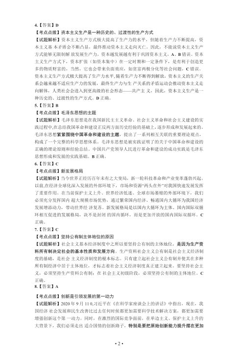
• 2 •
4.【答案】D
【考点点拨】资本主义生产是一种历史的、过渡性的生产方式
【试题解析】资本主义生产方式极大提高了生产力的水平，但随着生产力不断提高，资
本主义基本矛盾会不断凸显，最终推动资本主义走向灭亡。因此，不能说资本主义生产
方式能够无限制解放发展生产力，资本越发展越有利于巩固资本主义，A、B 错误。资本
主义生产方式下，资本扩张（如资本集中）在一定时期和一定条件下，是有利于创造更
多的物质财富的，当然，它也会带来负面效应，如贫富两极分化等社会问题，C 错误。
资本主义生产方式极大提高了生产力水平, 随着生产力不断得到解放，资本主义的生产关
系会越来越不适应生产力的发展，最终生产力与生产关系的矛盾运动会推动资本主义走
向解体，人类社会会进入到更高级的社会形态——共产主义，因此，资本主义生产是一
种历史的、过渡性的生产方式。D 正确。
5.【答案】B
【考点点拨】毛泽东思想的主题
【试题解析】毛泽东思想是在我国新民主主义革命、社会主义革命和社会主义建设的实
践过程中,在总结我国革命和建设正反两方面历史经验的基础上，逐步形成和发展起来的。
毛泽东思想紧紧围绕中国革命和建设的主题，提出了一系列相互关联的重要理论观点，
构成了一个完整的科学思想体系。毛泽东思想是被实践证明了的关于中国革命和建设的
正确的理论原则和经验总结。中国共产党领导人民进行革命和建设的成功实践是毛泽东
思想形成和发展的实践基础。B 正确。
6.【答案】C
【考点点拨】新发展格局
【试题解析】当今世界正经历百年未有之大变局，新一轮科技革命和产业变革蓬勃兴起。
以前,在经济全球化深入发展的外部环境下，市场和资源“两头在外”对我国快速发展发挥
了重要作用。在当前保护主义上升、世界经济低迷、全球市场萎缩的外部环境下，我们
必须充分发挥国内超大规模市场优势，通过繁荣国内经济、畅通国内大循环为我国经济
发展增添动力，带动世界经济复苏。新发展格局是以国内大循环为主体、国内国际双循
环相互促进的发展格局，决不是封闭的国内循环，而是更加开放的国内国际双循环。C
正确。
7.【答案】C
【考点点拨】坚持公有制主体地位的原因
【试题解析】社会主义基本经济制度中之所以要坚持公有制的主体地位，是因为生产资
料所有制决定社会的基本性质和发展方向。生产资料社会主义公有制是社会主义经济制
度的基础，是社会主义经济制度的根本标志。只有建立起社会主义公有制并使其在多种
所有制经济中居于主体地位，才标志着社会主义经济制度真正建立起来。要坚持社会主
义，必须坚持生产资料公有制；在社会主义初级阶段，必须坚持公有制的主体地位。C
正确。
8.【答案】A
【考点点拨】创新是引领发展的第一动力
【试题解析】2020 年9 月11 0,习近平在《在科学家座谈会上的讲话》中指出，现在，我
国经济社会发展和民生改善比过去任何时候都更加需要科学技术解决方案，都更加需要
增强创新这个第一动力。同时，在激烈的国际竞争面前，在单边主义、保护主义上升的
大背景下，我们必须走出适合国情的创新路子，特别是要把原始创新能力提升摆在更加
查看 / 复制本页文字
• 2 • 4.【答案】D 【考点点拨】资本主义生产是一种历史的、过渡性的生产方式 【试题解析】资本主义生产方式极大提高了生产力的水平，但随着生产力不断提高，资 本主义基本矛盾会不断凸显，最终推动资本主义走向灭亡。因此，不能说资本主义生产 方式能够无限制解放发展生产力，资本越发展越有利于巩固资本主义，A、B 错误。资本 主义生产方式下，资本扩张（如资本集中）在一定时期和一定条件下，是有利于创造更 多的物质财富的，当然，它也会带来负面效应，如贫富两极分化等社会问题，C 错误。 资本主义生产方式极大提高了生产力水平, 随着生产力不断得到解放，资本主义的生产关 系会越来越不适应生产力的发展，最终生产力与生产关系的矛盾运动会推动资本主义走 向解体，人类社会会进入到更高级的社会形态——共产主义，因此，资本主义生产是一 种历史的、过渡性的生产方式。D 正确。 5.【答案】B 【考点点拨】毛泽东思想的主题 【试题解析】毛泽东思想是在我国新民主主义革命、社会主义革命和社会主义建设的实 践过程中,在总结我国革命和建设正反两方面历史经验的基础上，逐步形成和发展起来的。 毛泽东思想紧紧围绕中国革命和建设的主题，提出了一系列相互关联的重要理论观点， 构成了一个完整的科学思想体系。毛泽东思想是被实践证明了的关于中国革命和建设的 正确的理论原则和经验总结。中国共产党领导人民进行革命和建设的成功实践是毛泽东 思想形成和发展的实践基础。B 正确。 6.【答案】C 【考点点拨】新发展格局 【试题解析】当今世界正经历百年未有之大变局，新一轮科技革命和产业变革蓬勃兴起。 以前,在经济全球化深入发展的外部环境下，市场和资源“两头在外”对我国快速发展发挥 了重要作用。在当前保护主义上升、世界经济低迷、全球市场萎缩的外部环境下，我们 必须充分发挥国内超大规模市场优势，通过繁荣国内经济、畅通国内大循环为我国经济 发展增添动力，带动世界经济复苏。新发展格局是以国内大循环为主体、国内国际双循 环相互促进的发展格局，决不是封闭的国内循环，而是更加开放的国内国际双循环。C 正确。 7.【答案】C 【考点点拨】坚持公有制主体地位的原因 【试题解析】社会主义基本经济制度中之所以要坚持公有制的主体地位，是因为生产资 料所有制决定社会的基本性质和发展方向。生产资料社会主义公有制是社会主义经济制 度的基础，是社会主义经济制度的根本标志。只有建立起社会主义公有制并使其在多种 所有制经济中居于主体地位，才标志着社会主义经济制度真正建立起来。要坚持社会主 义，必须坚持生产资料公有制；在社会主义初级阶段，必须坚持公有制的主体地位。C 正确。 8.【答案】A 【考点点拨】创新是引领发展的第一动力 【试题解析】2020 年9 月11 0,习近平在《在科学家座谈会上的讲话》中指出，现在，我 国经济社会发展和民生改善比过去任何时候都更加需要科学技术解决方案，都更加需要 增强创新这个第一动力。同时，在激烈的国际竞争面前，在单边主义、保护主义上升的 大背景下，我们必须走出适合国情的创新路子，特别是要把原始创新能力提升摆在更加
第 3 / 12 页
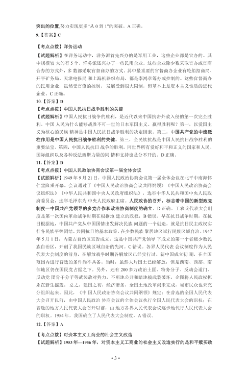
• 3 •
突出的位置,努力实现更多“从0 到1”的突破。A 正确。
9.【答案】C
【考点点拨】洋务运动
【试题解析】在洋务运动中，洋务派首先兴办的是军用工业，这些企业都是官办的。其
中规模较大的有5 个。洋务派还兴办了一些民用企业。这些企业除少数采取官办或官商
合办的方式外，多数都采取官督商办的方式。其中最重要的官督商办企业有轮船招商局、
开平矿务局、天津电报局和上海机器织布局，都是李鸿章筹办或控制的。这些官督商办
的民用企业，虽然受官僚的控制，发展受到很大限制，但基本上是资本主义性质的近代
企业。C 正确。
10.【答案】D
【考点点拨】中国人民抗日战争胜利的关键
【试题解析】中国人民抗日战争的胜利，是近代以来中国抗击外敌入侵的第一次完全胜
利。中国人民为什么能够战胜不可一世的日本军国主义、赢得胜利呢？第一，以爱国主
义为核心的民族精神是中国人民抗日战争胜利的决定因素。第二，中国共产党的中流砥
柱作用是中国人民抗日战争胜利的关键。第三，全民族抗战是中国人民抗日战争胜利的
重要法宝。第四，中国人民抗日战争的胜利，同世界所有爱好和平和正义的国家和人民、
国际组织以及各种反法西斯力量的同情和支持也是分不开的。D 正确。
11.【答案】D
【考点点拨】中国人民政治协商会议第一届全体会议
【试题解析】1949 年9 月21 日，中国人民政治协商会议第一届全体会议在北平中南海怀
仁堂隆重开幕。会议通过了《中国人民政治协商会议共同纲领》《中国人民政治协商会
议组织法》《中华人民共和国中央人民政府组织法》，选举中华人民共和国中央人民政
府委员会，选举毛泽东为中央人民政府主席。人民政协的召开，标志着中国的新型政党
制度一中国共产党领导的多党合作和政治协商制度的确立。D 正确。工农兵代表大会制
度是第一次国内革命战争时期在根据地建立的政权，B 错误。早在抗日战争时期，在抗
日根据地，中国共产党从中国国情出发解决民族问题的一个创造，就是抗日民主政权实
行各民族平等团结、共同抗日的基本政策，在少数民族聚居地区试行民族区域自治。1947
年5 月1 日，内蒙古自治区宣告成立，这是中国共产党领导下成立的第一个省级少数民
族自治区，开创了我国民族区域自治的先河。C 错误。各界人民代表会议制度作为人民
代表大会制度的前身，在解放战争时期各解放区已经实行过。新中国成立初期，在全国
范围内进行普选的条件尚不具备。当时，虽然大片国土已经解放，但是西南、西部、南
部地区仍在国民党占据之下。另外，还有200 多万政治土匪、特务分子、反动会道门、
反动党团骨干分子等武装敌对势力，不断地公开和暗地搞武装破坏，企图将人民政权扼
杀在新生摇篮。总之，建国之初，经济萧条，全国土地改革尚未完成，城市民众也未充
分组织起来。因此，《中国人民政治协商会议共同纲领》规定：在普选的全国人民代表
大会召开以前，由中国人民政治协商会议的全体会议执行全国人民代表大会的职权；在
普选的地方人民代表大会召开以前，由地方各界人民代表会议逐步地代行人民代表大会
的职权。1954 年，我国确立了人民代表大会制度，A 错误。
12.【答案】A
【考点点拨】对资本主义工商业的社会主义改造
【试题解析】1953 年—1956 年，对资本主义工商业的社会主义改造实行的是和平赎买政
查看 / 复制本页文字
• 3 • 突出的位置,努力实现更多“从0 到1”的突破。A 正确。 9.【答案】C 【考点点拨】洋务运动 【试题解析】在洋务运动中，洋务派首先兴办的是军用工业，这些企业都是官办的。其 中规模较大的有5 个。洋务派还兴办了一些民用企业。这些企业除少数采取官办或官商 合办的方式外，多数都采取官督商办的方式。其中最重要的官督商办企业有轮船招商局、 开平矿务局、天津电报局和上海机器织布局，都是李鸿章筹办或控制的。这些官督商办 的民用企业，虽然受官僚的控制，发展受到很大限制，但基本上是资本主义性质的近代 企业。C 正确。 10.【答案】D 【考点点拨】中国人民抗日战争胜利的关键 【试题解析】中国人民抗日战争的胜利，是近代以来中国抗击外敌入侵的第一次完全胜 利。中国人民为什么能够战胜不可一世的日本军国主义、赢得胜利呢？第一，以爱国主 义为核心的民族精神是中国人民抗日战争胜利的决定因素。第二，中国共产党的中流砥 柱作用是中国人民抗日战争胜利的关键。第三，全民族抗战是中国人民抗日战争胜利的 重要法宝。第四，中国人民抗日战争的胜利，同世界所有爱好和平和正义的国家和人民、 国际组织以及各种反法西斯力量的同情和支持也是分不开的。D 正确。 11.【答案】D 【考点点拨】中国人民政治协商会议第一届全体会议 【试题解析】1949 年9 月21 日，中国人民政治协商会议第一届全体会议在北平中南海怀 仁堂隆重开幕。会议通过了《中国人民政治协商会议共同纲领》《中国人民政治协商会 议组织法》《中华人民共和国中央人民政府组织法》，选举中华人民共和国中央人民政 府委员会，选举毛泽东为中央人民政府主席。人民政协的召开，标志着中国的新型政党 制度一中国共产党领导的多党合作和政治协商制度的确立。D 正确。工农兵代表大会制 度是第一次国内革命战争时期在根据地建立的政权，B 错误。早在抗日战争时期，在抗 日根据地，中国共产党从中国国情出发解决民族问题的一个创造，就是抗日民主政权实 行各民族平等团结、共同抗日的基本政策，在少数民族聚居地区试行民族区域自治。1947 年5 月1 日，内蒙古自治区宣告成立，这是中国共产党领导下成立的第一个省级少数民 族自治区，开创了我国民族区域自治的先河。C 错误。各界人民代表会议制度作为人民 代表大会制度的前身，在解放战争时期各解放区已经实行过。新中国成立初期，在全国 范围内进行普选的条件尚不具备。当时，虽然大片国土已经解放，但是西南、西部、南 部地区仍在国民党占据之下。另外，还有200 多万政治土匪、特务分子、反动会道门、 反动党团骨干分子等武装敌对势力，不断地公开和暗地搞武装破坏，企图将人民政权扼 杀在新生摇篮。总之，建国之初，经济萧条，全国土地改革尚未完成，城市民众也未充 分组织起来。因此，《中国人民政治协商会议共同纲领》规定：在普选的全国人民代表 大会召开以前，由中国人民政治协商会议的全体会议执行全国人民代表大会的职权；在 普选的地方人民代表大会召开以前，由地方各界人民代表会议逐步地代行人民代表大会 的职权。1954 年，我国确立了人民代表大会制度，A 错误。 12.【答案】A 【考点点拨】对资本主义工商业的社会主义改造 【试题解析】1953 年—1956 年，对资本主义工商业的社会主义改造实行的是和平赎买政
第 4 / 12 页
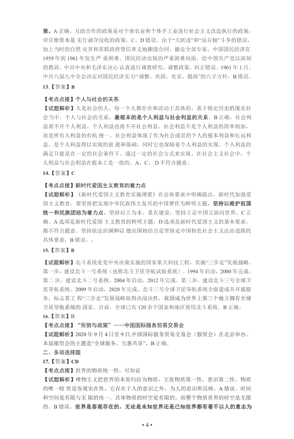
• 4 •
策。A 正确。互助合作的政策是对个体农业和个体手工业进行社会主义改造执行的政策；
对官僚资本是实行剥夺没收的政策，C、D 错误。由于“大跃进”和“反右倾”斗争的错误，
加上当时的自然灾害和苏联政府背信弃义地撕毁合同、撤走全部专家，中国国民经济在
1959 年到1961 年发生严重困难。国民经济出现的严重困难局面，给中国共产党以深刻
的教训。中共中央和毛泽东决心认真进行调查研究，调整政策，纠正错误。1961 年1 月，
中共八届九中全会决定对国民经济实行“调整、巩固、充实、提高”的八字方针，B 错误。
13.【答案】B
【考点点拨】个人与社会的关系
【试题解析】人是社会的人，每一个人都存在和活动于具体的、基于特定历史的现实社
会当中。个人与社会的关系，最根本的是个人利益与社会利益的关系。B 正确。社会利
益离不开个人利益，个人利益也离不开社会利益。社会利益不是个人利益的简单相加，
而是所有人利益的有机统一。社会利益体现了作为社会成员的个人的根本利益和长远利
益，是个人利益得以实现的前提和基础，同时它也保障着个人利益的实现。个人利益的
满足只能是在一定的社会条件下、通过一定的社会方式来实现。在社会主义社会中，个
人利益与社会利益在根本上是一致的。A、C、D 不符合题意。
14.【答案】C
【考点点拨】新时代爱国主义教育的着力点
【试题解析】《新时代爱国主义教育实施纲要》在总体要求中明确提出，新时代加强爱
国主义教育，要坚持把实现中华民族伟大复兴的中国梦作为鲜明主题，坚持以维护祖国
统一和民族团结为着力点，坚持以立为本、重在建设，坚持立足中国又面向世界。C 正
确。A 选项是新时代爱国主义教育的鲜明主题，D 选项是新时代爱国主义的基本要求，
都不符合题意。坚持依法治国和以德治国相结合是坚持走中国特色社会主义法治道路的
具体要求，B 错误。，
15.【答案】B
【试题解析】北斗系统是党中央决策实施的国家重大科技工程，实施“三步走”发展战略。
第一步，建设北斗一号系统（也称北斗卫星导航试验系统）。1994 年启动，2000 年完成。
第二步，建设北斗二号系统。2004 年启动，2012 年完成。第三步，建设北斗三号全球卫
星导航系统。2009 年启动，2020 年完成。北斗三号全球卫星导航系统全面建成并开通服
务，标志着工程“三步走”发展战略取得决战决胜，我国成为世界上第三个独立拥有全球
卫星导航系统的国家。目前，全球已有120 余个国家和地区使用北斗系统。B 正确。
16.【答案】B
【考点点拨】“形势与政策”——中国国际服务贸易交易会
【试题解析】2020 年9 月4 日至9 日,中国国际服务贸易交易会（服贸会）在北京举办。
本届服贸会的主题是“全球服务，互惠共享”，B 正确。
二、多项选择题
17.【答案】CD
【考点点拨】世界的物质统一性，可知论
【试题解析】唯物主义把世界的本原归结为物质，主张物质第一性，意识第二性。物质
的唯一特性是客观实在性，它存在于人的意识之外，为人的意识所反映。A 错误。时间
和空间是有限与无限的统一，具体物质的时空是有限的，而整个物质世界的时空是无限
的。B 错误。世界是客观存在的，无论是未知世界还是已知世界都有着不以人的意志为
查看 / 复制本页文字
• 4 • 策。A 正确。互助合作的政策是对个体农业和个体手工业进行社会主义改造执行的政策； 对官僚资本是实行剥夺没收的政策，C、D 错误。由于“大跃进”和“反右倾”斗争的错误， 加上当时的自然灾害和苏联政府背信弃义地撕毁合同、撤走全部专家，中国国民经济在 1959 年到1961 年发生严重困难。国民经济出现的严重困难局面，给中国共产党以深刻 的教训。中共中央和毛泽东决心认真进行调查研究，调整政策，纠正错误。1961 年1 月， 中共八届九中全会决定对国民经济实行“调整、巩固、充实、提高”的八字方针，B 错误。 13.【答案】B 【考点点拨】个人与社会的关系 【试题解析】人是社会的人，每一个人都存在和活动于具体的、基于特定历史的现实社 会当中。个人与社会的关系，最根本的是个人利益与社会利益的关系。B 正确。社会利 益离不开个人利益，个人利益也离不开社会利益。社会利益不是个人利益的简单相加， 而是所有人利益的有机统一。社会利益体现了作为社会成员的个人的根本利益和长远利 益，是个人利益得以实现的前提和基础，同时它也保障着个人利益的实现。个人利益的 满足只能是在一定的社会条件下、通过一定的社会方式来实现。在社会主义社会中，个 人利益与社会利益在根本上是一致的。A、C、D 不符合题意。 14.【答案】C 【考点点拨】新时代爱国主义教育的着力点 【试题解析】《新时代爱国主义教育实施纲要》在总体要求中明确提出，新时代加强爱 国主义教育，要坚持把实现中华民族伟大复兴的中国梦作为鲜明主题，坚持以维护祖国 统一和民族团结为着力点，坚持以立为本、重在建设，坚持立足中国又面向世界。C 正 确。A 选项是新时代爱国主义教育的鲜明主题，D 选项是新时代爱国主义的基本要求， 都不符合题意。坚持依法治国和以德治国相结合是坚持走中国特色社会主义法治道路的 具体要求，B 错误。， 15.【答案】B 【试题解析】北斗系统是党中央决策实施的国家重大科技工程，实施“三步走”发展战略。 第一步，建设北斗一号系统（也称北斗卫星导航试验系统）。1994 年启动，2000 年完成。 第二步，建设北斗二号系统。2004 年启动，2012 年完成。第三步，建设北斗三号全球卫 星导航系统。2009 年启动，2020 年完成。北斗三号全球卫星导航系统全面建成并开通服 务，标志着工程“三步走”发展战略取得决战决胜，我国成为世界上第三个独立拥有全球 卫星导航系统的国家。目前，全球已有120 余个国家和地区使用北斗系统。B 正确。 16.【答案】B 【考点点拨】“形势与政策”——中国国际服务贸易交易会 【试题解析】2020 年9 月4 日至9 日,中国国际服务贸易交易会（服贸会）在北京举办。 本届服贸会的主题是“全球服务，互惠共享”，B 正确。 二、多项选择题 17.【答案】CD 【考点点拨】世界的物质统一性，可知论 【试题解析】唯物主义把世界的本原归结为物质，主张物质第一性，意识第二性。物质 的唯一特性是客观实在性，它存在于人的意识之外，为人的意识所反映。A 错误。时间 和空间是有限与无限的统一，具体物质的时空是有限的，而整个物质世界的时空是无限 的。B 错误。世界是客观存在的，无论是未知世界还是已知世界都有着不以人的意志为
第 5 / 12 页
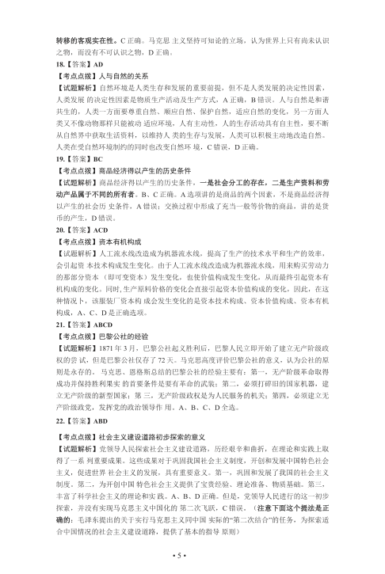
• 5 •
转移的客观实在性。C 正确。马克思主义坚持可知论的立场，认为世界上只有尚未认识
之物，而没有不可认识之物，D 正确。
18.【答案】AD
【考点点拨】人与自然的关系
【试题解析】自然环境是人类生存和发展的重要前提，但不是人类发展的决定性因素，
人类发展的决定性因素是物质生产活动及生产方式，A 正确，B 错误。人与自然是和谐
共生的，人类一方面要尊重自然、顺应自然、保护自然，适应自然的变化，另一方面人
类又不像动物那样只能被动适应环境，人有主动性，人的生存活动具有自主性，要不断
从自然界中获取生活资料，以维持人类的生存与发展，人类可以积极主动地改造自然。
人类在受自然环境制约的同时也改变自然环境，C 错误，D 正确。
19.【答案】BC
【考点点拨】商品经济得以产生的历史条件
【试题解析】商品经济得以产生的历史条件，一是社会分工的存在，二是生产资料和劳
动产品属于不同的所有者。B、C 正确。A 选项讲的是商品的两个因素，不是商品经济得
以产生的社会历史条件，A 错误；交换过程中形成了充当一般等价物的商品，讲的是货
币的产生，D 错误。
20.【答案】ACD
【考点点拨】资本有机构成
【试题解析】人工流水线改造成为机器流水线，提高了生产的技术水平和生产的效率，
会引起资本技术构成发生变化。由于人工流水线改造成为机器流水线，用来购买劳动力
的那部分资本（即可变资本）发生变化，也使价值构成发生变化，从而最终引起资本有
机构成的变化。同时, 生产原料价格的变化会直接引起资本价值构成的变化，因此，在这
种情况卜，该服装厂资本构成会发生变化的是资本技术构成、资本价值构成、资本有机
构成，A、C、D 是正确选项。
21.【答案】ABCD
【考点点拨】巴黎公社的经验
【试题解析】1871 年3 月，巴黎公社起义胜利后，巴黎人民立即开始了建立无产阶级政
权的尝试，但是巴黎公社仅存了72 天。马克思高度评价巴黎公社的意义，认为公社的原
则是永存的。马克思、恩格斯总结的巴黎公社的经验主要有：第一，无产阶级革命取得
成功并保持胜利果实的首要条件是要有革命的武装；第二，必须打碎旧的国家机器，建
立无产阶级的新型国家；第三，无产阶级政权是为人民服务的机关；第四，必须建立无
产阶级政党，发挥党的政治领导作用。A、B、C、D 全选。
22.【答案】ABD
【考点点拨】社会主义建设道路初步探索的意义
【试题解析】党领导人民探索社会主义建设道路，历经艰辛和曲折，在理论和实践上取
得了一系列重要成果。这些成果对于巩固我国社会主义制度，开创和发展中国特色社会
主义，促进世界社会主义的发展，具有重要意义。第一，巩固和发展了我国的社会主义
制度。第二，为开创中国特色社会主义提供了宝贵经验、理论准备、物质基础。第三，
丰富了科学社会主义的理论和实践。A、B、D 正确。但是，党领导人民进行的这一初步
探索，并没有实现马克思主义中国化的第二次飞跃，C 错误。（注意下面这个提法是正
确的：毛泽东提出的关于实行马克思主义同中国实际的“第二次结合”的任务，为探索适
合中国情况的社会主义建设道路，提供了基本的指导原则）
查看 / 复制本页文字
• 5 • 转移的客观实在性。C 正确。马克思主义坚持可知论的立场，认为世界上只有尚未认识 之物，而没有不可认识之物，D 正确。 18.【答案】AD 【考点点拨】人与自然的关系 【试题解析】自然环境是人类生存和发展的重要前提，但不是人类发展的决定性因素， 人类发展的决定性因素是物质生产活动及生产方式，A 正确，B 错误。人与自然是和谐 共生的，人类一方面要尊重自然、顺应自然、保护自然，适应自然的变化，另一方面人 类又不像动物那样只能被动适应环境，人有主动性，人的生存活动具有自主性，要不断 从自然界中获取生活资料，以维持人类的生存与发展，人类可以积极主动地改造自然。 人类在受自然环境制约的同时也改变自然环境，C 错误，D 正确。 19.【答案】BC 【考点点拨】商品经济得以产生的历史条件 【试题解析】商品经济得以产生的历史条件，一是社会分工的存在，二是生产资料和劳 动产品属于不同的所有者。B、C 正确。A 选项讲的是商品的两个因素，不是商品经济得 以产生的社会历史条件，A 错误；交换过程中形成了充当一般等价物的商品，讲的是货 币的产生，D 错误。 20.【答案】ACD 【考点点拨】资本有机构成 【试题解析】人工流水线改造成为机器流水线，提高了生产的技术水平和生产的效率， 会引起资本技术构成发生变化。由于人工流水线改造成为机器流水线，用来购买劳动力 的那部分资本（即可变资本）发生变化，也使价值构成发生变化，从而最终引起资本有 机构成的变化。同时, 生产原料价格的变化会直接引起资本价值构成的变化，因此，在这 种情况卜，该服装厂资本构成会发生变化的是资本技术构成、资本价值构成、资本有机 构成，A、C、D 是正确选项。 21.【答案】ABCD 【考点点拨】巴黎公社的经验 【试题解析】1871 年3 月，巴黎公社起义胜利后，巴黎人民立即开始了建立无产阶级政 权的尝试，但是巴黎公社仅存了72 天。马克思高度评价巴黎公社的意义，认为公社的原 则是永存的。马克思、恩格斯总结的巴黎公社的经验主要有：第一，无产阶级革命取得 成功并保持胜利果实的首要条件是要有革命的武装；第二，必须打碎旧的国家机器，建 立无产阶级的新型国家；第三，无产阶级政权是为人民服务的机关；第四，必须建立无 产阶级政党，发挥党的政治领导作用。A、B、C、D 全选。 22.【答案】ABD 【考点点拨】社会主义建设道路初步探索的意义 【试题解析】党领导人民探索社会主义建设道路，历经艰辛和曲折，在理论和实践上取 得了一系列重要成果。这些成果对于巩固我国社会主义制度，开创和发展中国特色社会 主义，促进世界社会主义的发展，具有重要意义。第一，巩固和发展了我国的社会主义 制度。第二，为开创中国特色社会主义提供了宝贵经验、理论准备、物质基础。第三， 丰富了科学社会主义的理论和实践。A、B、D 正确。但是，党领导人民进行的这一初步 探索，并没有实现马克思主义中国化的第二次飞跃，C 错误。（注意下面这个提法是正 确的：毛泽东提出的关于实行马克思主义同中国实际的“第二次结合”的任务，为探索适 合中国情况的社会主义建设道路，提供了基本的指导原则）
第 6 / 12 页
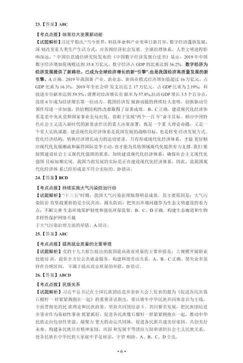
• 6 •
23.【答案】ABC
【考点点拨】培育壮大发展新动能
【试题解析】习近平指出,“当今世界，科技革命和产业变革日新月异，数字经济蓬勃发展，
深刻改变着人类生产生活方式，对各国经济社会发展、全球治理体系、人类文明进程影
响深远。” 中国信息通信研究院发布的《中国数字经济发展白皮书》显示，2019 年中国
数字经济增加值规模达到35.8 万亿元，数字经济占GDP 的比重达到36.2%。数字经济为
经济发展提供了新路径。已成为全球经济增长的新“引擎”,也是我国经济高质量发展的新
引擎。A 正确。2019 年我国新产业、新业态、新商业模式经济增加值超过16 万亿元，占
GDP 比重为16.3%。2019 年全社会研发支出达2. 17 万亿元，占GDP 比重为2.19%；科
技进步贡献率达到59.5% ；消费对经济增长贡献率为57.8%,拉动GDP 增长3.5 个百分点，
连续6 年成为经济增长第一拉动力。我国经济发展新动能的持续壮大表明，创新驱动引
领作用进一步加强，供给侧结构性改革取得了显著成效。B、C 正确。建设现代化经济体
系是党中央从党和国家事业全局出发，着眼于实现“两个一百年”奋斗目标、顺应中国特
色社会主义进入新时代的新要求作出的重大决策部署，既是一个重大理论命题，又是一
个重大实践课题。建设现代化经济体系是我国发展的战略目标，也是转变经济发展方式、
优化经济结构、转换经济增长动力的迫切要求。只有形成现代化经济体系，才能更好顺
应现代化发展潮流和赢得国际竞争主动，也才能为其他领域现代化提供有力支撑。我们要
按照建设社会主义现代化强国的要求，加快建设现代化经济体系，确保社会主义现代化
强国目标如期实现。我国当前发展的实际是正在建设现代化经济体系，因此，说我国现
代化经济体系已经形成是不符合实际的。D 错误。
24.【答案】BCD
【考点点拨】持续实施大气污染防治行动
【试题解析】“十三五”时期，我国大气污染治理取得明显成效。其主要原因是：大气污
染防治攻坚战秉持的是全民共治，源头防治；把突出环境问题作为生态文明建设的着力
点；不断完善生态环境保护制度和强化环保监督，B、C、D 正确。构建生态廊道和生物
多样性保护网络不属
于大气污染治理方面的举措，A 错误。
25.【答案】ABC
【考点点拨】提高就业质量的主要举措
【试题解析】党的十九大报告提出的我国提高就业质量的主要举措是：大规模开展职业
技能培训，提供全方位公共就业服务，构建和谐劳动关系，A、B、C 正确。使失业率保
持在合理区间，不属于提高就业质量的举措，D 错误。
26.【答案】ABCD
【考点点拨】民族关系
【试题解析】习近平总书记在全国民族团结进步表彰大会上发表的题为《促进各民族像
石榴籽一样紧紧拥抱在一起》的重要讲话指出，要以铸牢中华民族共同体意识为主线，
全面贯彻党的民族理论和民族政策，坚持共同团结奋斗、共同繁荣发展，把民族团结进
步事业作为基础性事业抓紧抓好，促进各民族像石榴籽一样紧紧拥抱在一起，推动中华
民族走向包容性更强、凝聚力更大的命运共同体，促进各民族共建美好家园、共创美好
未来。构建各民族共有精神家园，巩固和发展平等团结互助和谐的社会主义民族关系，
使各民族在中华民族大家庭中手足相亲，守望相助。A、B、C、D 全选。
查看 / 复制本页文字
• 6 • 23.【答案】ABC 【考点点拨】培育壮大发展新动能 【试题解析】习近平指出,“当今世界，科技革命和产业变革日新月异，数字经济蓬勃发展， 深刻改变着人类生产生活方式，对各国经济社会发展、全球治理体系、人类文明进程影 响深远。” 中国信息通信研究院发布的《中国数字经济发展白皮书》显示，2019 年中国 数字经济增加值规模达到35.8 万亿元，数字经济占GDP 的比重达到36.2%。数字经济为 经济发展提供了新路径。已成为全球经济增长的新“引擎”,也是我国经济高质量发展的新 引擎。A 正确。2019 年我国新产业、新业态、新商业模式经济增加值超过16 万亿元，占 GDP 比重为16.3%。2019 年全社会研发支出达2. 17 万亿元，占GDP 比重为2.19%；科 技进步贡献率达到59.5% ；消费对经济增长贡献率为57.8%,拉动GDP 增长3.5 个百分点， 连续6 年成为经济增长第一拉动力。我国经济发展新动能的持续壮大表明，创新驱动引 领作用进一步加强，供给侧结构性改革取得了显著成效。B、C 正确。建设现代化经济体 系是党中央从党和国家事业全局出发，着眼于实现“两个一百年”奋斗目标、顺应中国特 色社会主义进入新时代的新要求作出的重大决策部署，既是一个重大理论命题，又是一 个重大实践课题。建设现代化经济体系是我国发展的战略目标，也是转变经济发展方式、 优化经济结构、转换经济增长动力的迫切要求。只有形成现代化经济体系，才能更好顺 应现代化发展潮流和赢得国际竞争主动，也才能为其他领域现代化提供有力支撑。我们要 按照建设社会主义现代化强国的要求，加快建设现代化经济体系，确保社会主义现代化 强国目标如期实现。我国当前发展的实际是正在建设现代化经济体系，因此，说我国现 代化经济体系已经形成是不符合实际的。D 错误。 24.【答案】BCD 【考点点拨】持续实施大气污染防治行动 【试题解析】“十三五”时期，我国大气污染治理取得明显成效。其主要原因是：大气污 染防治攻坚战秉持的是全民共治，源头防治；把突出环境问题作为生态文明建设的着力 点；不断完善生态环境保护制度和强化环保监督，B、C、D 正确。构建生态廊道和生物 多样性保护网络不属 于大气污染治理方面的举措，A 错误。 25.【答案】ABC 【考点点拨】提高就业质量的主要举措 【试题解析】党的十九大报告提出的我国提高就业质量的主要举措是：大规模开展职业 技能培训，提供全方位公共就业服务，构建和谐劳动关系，A、B、C 正确。使失业率保 持在合理区间，不属于提高就业质量的举措，D 错误。 26.【答案】ABCD 【考点点拨】民族关系 【试题解析】习近平总书记在全国民族团结进步表彰大会上发表的题为《促进各民族像 石榴籽一样紧紧拥抱在一起》的重要讲话指出，要以铸牢中华民族共同体意识为主线， 全面贯彻党的民族理论和民族政策，坚持共同团结奋斗、共同繁荣发展，把民族团结进 步事业作为基础性事业抓紧抓好，促进各民族像石榴籽一样紧紧拥抱在一起，推动中华 民族走向包容性更强、凝聚力更大的命运共同体，促进各民族共建美好家园、共创美好 未来。构建各民族共有精神家园，巩固和发展平等团结互助和谐的社会主义民族关系， 使各民族在中华民族大家庭中手足相亲，守望相助。A、B、C、D 全选。
第 7 / 12 页
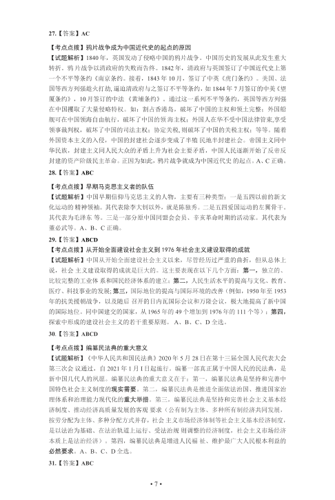
• 7 •
27.【答案】AC
【考点点拨】鸦片战争成为中国近代史的起点的原因
【试题解析】1840 年，英国发动了侵略中国的鸦片战争。中国历史的发展从此发生重大
转折。鸦片战争以清政府的失败而告终。1842 年，清政府与英国签订了中国近代史上第
一个不平等条约《南京条约。接着，1843 年10 月，签订了中英《虎门条约》。美国、法
国等西方列强趁火打劫, 逼迫清政府与之签订不平等条约，如1844 年7 月签订的中美《望
厦条约》，10 月签订的中法《黄埔条约》。通过这一系列不平等条约，英国等西方列强
在中国攫取了大量侵略特权。如：割占香港岛，破坏了中国的主权和领土完整；外国船
舰可在中国领海自由航行，破坏了中国的领海主权；外国人在华不受中国法律管束,享受
领事裁判权，破坏了中国的司法主权；协定关税, 则破坏了中国的关税主权；等等。随着
外国资本主义的入侵，中国的封建社会逐步变成了半殖民地半封建社会。帝国主义同中
华民族，封建主义同人民大众的矛盾上升为社会主要矛盾，中国人民逐渐开始了反帝反
封建的资产阶级民主革命。正因为如此，鸦片战争就成为中国近代史的起点。A、C 正确。
28.【答案】ABC
【考点点拨】早期马克思主义者的队伍
【试题解析】中国早期信仰马克思主义的人物，主要有三种类型：一是五四以前的新文
化运动的精神领袖。其代表除李大钊以外，就是陈独秀。二是五四爱国运动的左翼骨干。
其代表为毛泽东等。三是一部分原中国同盟会会员、辛亥革命时期的活动家。其代表为
董必武等。A、B、C 正确。
29.【答案】ABCD
【考点点拨】从开始全面建设社会主义到1976 年社会主义建设取得的成就
【试题解析】中国从开始全面建设社会主义以来，尽管经历过严重的曲折，但从总体上
说，社会主义建设取得的成就是巨大的。这主要表现在以下几个方面：第一，独立的、
比较完整的工业体系和国民经济体系的建立；第二，人民生活水平的提高与文化、教育、
医疗、科技事业的发展; 第三，国际地位的提高与国际环境的改善（例如，1950 年至1953
年的抗美援朝战争，以及随后召开的日内瓦国际会议和万隆会议，极大地提高了新中国
的国际地位。同中国建交的国家，从1965 年的49 个增加到1976 年的111 个等）；第四，
探索中形成的建设社会主义的若干重要原则。A、B、C、D 全选。
30.【答案】ABCD
【考点点拨】编纂民法典的重大意义
【试题解析】《中华人民共和国民法典》2020 年5 月28 日在第十三届全国人民代表大会
第三次会议通过，自2021 年1 月I 日起施行。编纂一部真正属于中国人民的民法典，是
新中国几代人的夙愿。编纂民法典的重大意义在于：第一，编纂民法典是坚持和完善中
国特色社会主义制度的现实需要。第二，编纂民法典是推进全面依法治国、推进国家治
理体系和治理能力现代化的重大举措。第三，编纂民法典是坚持和完善社会主义基本经
济制度、推动经济高质量发展的客观要求（公有制为主体、多种所有制经济共同发展，
按劳分配为主体、多种分配方式并存，社会主义市场经济体制等社会主义基本经济制度，
是以法治为基础、在法治轨道上运行、受法治规则调整的经济制度，社会主义市场经济
本质上是法治经济）。第四，编纂民法典是增进人民福祉、维护最广大人民根本利益的
必然要求。A、B、C、D 全选。
31.【答案】ABC
查看 / 复制本页文字
• 7 • 27.【答案】AC 【考点点拨】鸦片战争成为中国近代史的起点的原因 【试题解析】1840 年，英国发动了侵略中国的鸦片战争。中国历史的发展从此发生重大 转折。鸦片战争以清政府的失败而告终。1842 年，清政府与英国签订了中国近代史上第 一个不平等条约《南京条约。接着，1843 年10 月，签订了中英《虎门条约》。美国、法 国等西方列强趁火打劫, 逼迫清政府与之签订不平等条约，如1844 年7 月签订的中美《望 厦条约》，10 月签订的中法《黄埔条约》。通过这一系列不平等条约，英国等西方列强 在中国攫取了大量侵略特权。如：割占香港岛，破坏了中国的主权和领土完整；外国船 舰可在中国领海自由航行，破坏了中国的领海主权；外国人在华不受中国法律管束,享受 领事裁判权，破坏了中国的司法主权；协定关税, 则破坏了中国的关税主权；等等。随着 外国资本主义的入侵，中国的封建社会逐步变成了半殖民地半封建社会。帝国主义同中 华民族，封建主义同人民大众的矛盾上升为社会主要矛盾，中国人民逐渐开始了反帝反 封建的资产阶级民主革命。正因为如此，鸦片战争就成为中国近代史的起点。A、C 正确。 28.【答案】ABC 【考点点拨】早期马克思主义者的队伍 【试题解析】中国早期信仰马克思主义的人物，主要有三种类型：一是五四以前的新文 化运动的精神领袖。其代表除李大钊以外，就是陈独秀。二是五四爱国运动的左翼骨干。 其代表为毛泽东等。三是一部分原中国同盟会会员、辛亥革命时期的活动家。其代表为 董必武等。A、B、C 正确。 29.【答案】ABCD 【考点点拨】从开始全面建设社会主义到1976 年社会主义建设取得的成就 【试题解析】中国从开始全面建设社会主义以来，尽管经历过严重的曲折，但从总体上 说，社会主义建设取得的成就是巨大的。这主要表现在以下几个方面：第一，独立的、 比较完整的工业体系和国民经济体系的建立；第二，人民生活水平的提高与文化、教育、 医疗、科技事业的发展; 第三，国际地位的提高与国际环境的改善（例如，1950 年至1953 年的抗美援朝战争，以及随后召开的日内瓦国际会议和万隆会议，极大地提高了新中国 的国际地位。同中国建交的国家，从1965 年的49 个增加到1976 年的111 个等）；第四， 探索中形成的建设社会主义的若干重要原则。A、B、C、D 全选。 30.【答案】ABCD 【考点点拨】编纂民法典的重大意义 【试题解析】《中华人民共和国民法典》2020 年5 月28 日在第十三届全国人民代表大会 第三次会议通过，自2021 年1 月I 日起施行。编纂一部真正属于中国人民的民法典，是 新中国几代人的夙愿。编纂民法典的重大意义在于：第一，编纂民法典是坚持和完善中 国特色社会主义制度的现实需要。第二，编纂民法典是推进全面依法治国、推进国家治 理体系和治理能力现代化的重大举措。第三，编纂民法典是坚持和完善社会主义基本经 济制度、推动经济高质量发展的客观要求（公有制为主体、多种所有制经济共同发展， 按劳分配为主体、多种分配方式并存，社会主义市场经济体制等社会主义基本经济制度， 是以法治为基础、在法治轨道上运行、受法治规则调整的经济制度，社会主义市场经济 本质上是法治经济）。第四，编纂民法典是增进人民福祉、维护最广大人民根本利益的 必然要求。A、B、C、D 全选。 31.【答案】ABC
第 8 / 12 页
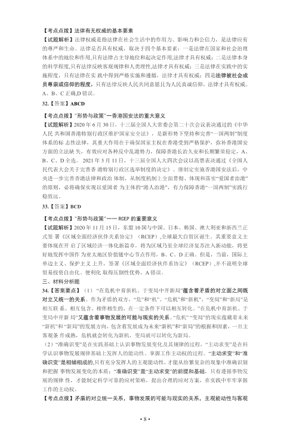
• 8 •
【考点点拨】法律有无权威的基本要素
【试题解析】法律权威是指法律在社会生活中的作用力、影响力和公信力，是法律应有
的尊严和生命。法律是否具有权威，取决于四个基本要素：一是法律在国家和社会治理
体系中的地位和作用,只有法律占主导地位和起决定作用,法律才具有权威；二是法律本身
的科学程度,只有法律反映客观规律和人类理性,法律才具有权威；三是法律在实践中的实
施程度，只有法律在实践中得到严格实施和遵循，法律才具有权威；四是法律被社会成
员尊崇或信仰的程度，只有法律反映人民共同意愿且为人民真诚信仰，法律才具有权威。
A、B、C 正确,D 错误。
32.【答案】ABCD
【考点点拨】"形势与政策"一香港国安法的重大意义
【试题解析】2020 年6 月30 日，十三届全国人大常委会第二十次会议表决通过的《中华
人民共和国香港特别行政区维护国家安全法》，是新形势下坚持和完善“一国两制”制度
体系的标志性法律，其重大作用在于确保国家主权在香港受到严格保护，弥补香港国安
方面的立法缺失，有效应对各种反中乱港势力，保障香港长治久安和长期繁荣稳定，A、
B、C、D 全选。2021 年3 月11 日，十三届全国人大四次会议以高票表决通过《全国人
民代表大会关于完善香港特别行政区选举制度的决定》。继制定实施香港国安法后，中
央进一步完善香港法律和政治体制，从制度机制上全面贯彻、体现和落实“爱国者治港”
的原则，必将确保实现以爱国者为主体的“港人治港”，有力保障香港“一国两制”实践行
稳致远。
33.【答案】BCD
【考点点拨】"形势与政策"一一RCEP 的重要意义
【试题解析】2020 年11 月15 日，东盟10 国与中国、日本、韩国、澳大利亚和新西兰正
式签署《区域全面经济伙伴关系协定》（RCEP）,全球最大自贸区诞生。其重要意义主
要体现在开启了区域经济一体化新篇章，将为区域乃至全球经济复苏注入新动能，将更
好地发挥中国作为亚太地区价值链中心节点作用，B、C、D 正确。但是，当前，国际上
单边主义、保护主义上升，签署《区域全面经济伙伴系协定》（RCEP）,并不说明全球
贸易投资自由化、便利化取得压倒性优势，A 错误。
三、材料分析题
34.【答案要点】（1）“在危机中育新机、于变局中开新局”蕴含着矛盾的对立面之间既
对立又统一的关系。作为矛盾的双方，“危”和“机”、“危机”和“新机”、“变局”和“新局”是
相互联系、相互包含、相伴相生的，在一定条件下可以相互转化。”在危机中育新机、于
变局中开新局”又蕴含着事物发展的可能与现实的关系。“危机” “变局”的现实蕴藏着未来
“新机”和“新局”的发展方向，包含着发展成为未来“新机”和“新局”的根据和因素，一旦主
客观条件成熟，危机就会转化为新机，变局就可以转化为新局。
（2）“准确识变”是在实践基础上认识事物发展变化及其规律的过程，“主动求变”是在科
学认识事物发展规律基础上发挥人的能动性、掌握工作主动权的过程。“主动求变”和“准
确识变”是相辅相成的,只有充分发挥人的主观能动性，才能从纷繁复杂的现象中准确识别
和把握事物发展变化的本质；“准确识变”是“主动求变”的前提和基础，只有遵循事物发
展的规律性，才能制定科学可靠的应对策略，提出合理的应对方案，在实践中牢牢掌握
工作的主动权。
【考点点拨】矛盾的对立统一关系，事物发展的可能与现实的关系，主观能动性与客观
查看 / 复制本页文字
• 8 • 【考点点拨】法律有无权威的基本要素 【试题解析】法律权威是指法律在社会生活中的作用力、影响力和公信力，是法律应有 的尊严和生命。法律是否具有权威，取决于四个基本要素：一是法律在国家和社会治理 体系中的地位和作用,只有法律占主导地位和起决定作用,法律才具有权威；二是法律本身 的科学程度,只有法律反映客观规律和人类理性,法律才具有权威；三是法律在实践中的实 施程度，只有法律在实践中得到严格实施和遵循，法律才具有权威；四是法律被社会成 员尊崇或信仰的程度，只有法律反映人民共同意愿且为人民真诚信仰，法律才具有权威。 A、B、C 正确,D 错误。 32.【答案】ABCD 【考点点拨】"形势与政策"一香港国安法的重大意义 【试题解析】2020 年6 月30 日，十三届全国人大常委会第二十次会议表决通过的《中华 人民共和国香港特别行政区维护国家安全法》，是新形势下坚持和完善“一国两制”制度 体系的标志性法律，其重大作用在于确保国家主权在香港受到严格保护，弥补香港国安 方面的立法缺失，有效应对各种反中乱港势力，保障香港长治久安和长期繁荣稳定，A、 B、C、D 全选。2021 年3 月11 日，十三届全国人大四次会议以高票表决通过《全国人 民代表大会关于完善香港特别行政区选举制度的决定》。继制定实施香港国安法后，中 央进一步完善香港法律和政治体制，从制度机制上全面贯彻、体现和落实“爱国者治港” 的原则，必将确保实现以爱国者为主体的“港人治港”，有力保障香港“一国两制”实践行 稳致远。 33.【答案】BCD 【考点点拨】"形势与政策"一一RCEP 的重要意义 【试题解析】2020 年11 月15 日，东盟10 国与中国、日本、韩国、澳大利亚和新西兰正 式签署《区域全面经济伙伴关系协定》（RCEP）,全球最大自贸区诞生。其重要意义主 要体现在开启了区域经济一体化新篇章，将为区域乃至全球经济复苏注入新动能，将更 好地发挥中国作为亚太地区价值链中心节点作用，B、C、D 正确。但是，当前，国际上 单边主义、保护主义上升，签署《区域全面经济伙伴系协定》（RCEP）,并不说明全球 贸易投资自由化、便利化取得压倒性优势，A 错误。 三、材料分析题 34.【答案要点】（1）“在危机中育新机、于变局中开新局”蕴含着矛盾的对立面之间既 对立又统一的关系。作为矛盾的双方，“危”和“机”、“危机”和“新机”、“变局”和“新局”是 相互联系、相互包含、相伴相生的，在一定条件下可以相互转化。”在危机中育新机、于 变局中开新局”又蕴含着事物发展的可能与现实的关系。“危机” “变局”的现实蕴藏着未来 “新机”和“新局”的发展方向，包含着发展成为未来“新机”和“新局”的根据和因素，一旦主 客观条件成熟，危机就会转化为新机，变局就可以转化为新局。 （2）“准确识变”是在实践基础上认识事物发展变化及其规律的过程，“主动求变”是在科 学认识事物发展规律基础上发挥人的能动性、掌握工作主动权的过程。“主动求变”和“准 确识变”是相辅相成的,只有充分发挥人的主观能动性，才能从纷繁复杂的现象中准确识别 和把握事物发展变化的本质；“准确识变”是“主动求变”的前提和基础，只有遵循事物发 展的规律性，才能制定科学可靠的应对策略，提出合理的应对方案，在实践中牢牢掌握 工作的主动权。 【考点点拨】矛盾的对立统一关系，事物发展的可能与现实的关系，主观能动性与客观
第 9 / 12 页
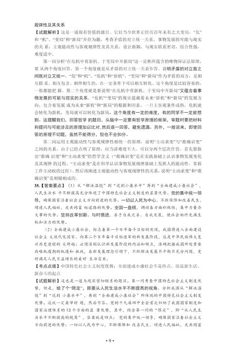
• 9 •
规律性及其关系
【试题解析】这是一道很有价值的题目。它以当今世界正经历百年未有之大变局，“危”
和“机”、“变局”和“新局”并存为题，考查矛盾的对立统一关系，事物发展的可能与现实
的关系，主观能动性与客观规律性及其关系，设计新颖，与现实联系密切，综合性强，
难度适中。
第一问分析“在危机中育新机、于变局中开新局”这一论断所蕴含的唯物辩证法原理，
要从两个角度回答。第一个角度就是从矛盾的对立统一关系作答。说明矛盾的对立面之
间既对立又统一。“危”和“机”、“危机”和“新机”、“变局”和“新局”作为矛盾的双方，是相
互联系、相互包含、相伴相生的，在一定条件下可以相互转化。这个角度是比较容易的，
一般都能把握。第二个角度就是要说明“在危机中育新机、于变局中开新局”又蕴含着事
物发展的可能与现实的关系。“危机”“变局”的现实蕴藏着未来“新机”和“新局”的发展方
向，包含着发展成为未来“新机”和“新局”的根据和因素，一旦主客观条件成熟，危机就
会转化为新机，变局就可以转化为新局。这个角度有一定的难度，有的同学不一定能想
到。这提醒我们，回答哲学的题目，头脑中一定要有哲学原理的框架，审题时要把材料
和提问与可能涉及的原理加以比对, 然后逐一回答，避免遗漏。另外，一般说来，即使回
答的原理不切题，虽然不能得分，但也不会扣分。
第二问运用主观能动性与客观规律性相统一的原理，说明“主动求变”与“准确识变”
之间的关系，由于已经点明了原理，应当讲难度不大。可以分两个层次作答。首先要指
出“准确识变”和“主动求变”的哲学含义（“准确识变”是在实践基础上认识事物发展变化
及其规律的过程，“主动求变”是在科学认识事物发展规律基础上发挥人的能动性、掌握
工作主动权的过程），然后再阐述主观能动性与客观规律性的关系，说明“主动求变”和“准
确识变”是相辅相成的。
35.【答案要点】（1）从“解决温饱”到“达到小康水平”再到“全面建成小康社会”，
人民生活水平不断提高充分体现了中国特色社会主义制度的显著优势。党的集中统一领
导，确保国家沿着社会主义方向前进的优势。一切以人民为中心，不断保障和改善民生、
增进人民福祉，走共同富裕道路的优势。全国一盘棋，调动各方面积极性，集中力量办
大事的优势。坚持改革创新、与时俱进，善于自我完善、自我发展，使社会始终充满生
机和活力的优势。
（2）全面建成小康社会，标志着第一个百年奋斗目标的实现，我国将进入全面建设
社会主义现代化国家、向第二个百年奋斗目标进军的新发展阶段，这是中华民族伟大复
兴历史进程的大跨越；必须深刻认识新发展阶段的内涵和特点，准确把握我国所处重要
战略机遇期的机遇和挑战，在新发展理念引领下，不断解决发展不平衡不充分问题，更
好满足人民日益增长的美好生活需要。
【考点点拨】中国特色社会主义制度优势；全面建成小康社会不是终点，而是新生活、
新奋斗的起点
【试题解析】这也是一道与现实密切联系的题目。第一问考查中国特色社会主义制度优
势，但是，给了个“限定”，即要从人民生活水平不断提高的视角，分析我国从“解决温
饱”到“达到小康水平”，再到“全面建成小康社会”所体现的中国特色社会主义制度
优势。这就一定要审好题，然后作答。党的十九届四中全会首次归纳了我国国家制度和
国家治理体系的13 个方面的显著优势，其中，结合第一问的“限定”，即“从人民生
活水平不断提高的视角”，答案就是四点：党的集中统一领导，确保国家沿着社会主义
方向前进的优势；一切以人民为中心，不断保障和改善民生、增进人民福祉，走共同富
查看 / 复制本页文字
• 9 • 规律性及其关系 【试题解析】这是一道很有价值的题目。它以当今世界正经历百年未有之大变局，“危” 和“机”、“变局”和“新局”并存为题，考查矛盾的对立统一关系，事物发展的可能与现实 的关系，主观能动性与客观规律性及其关系，设计新颖，与现实联系密切，综合性强， 难度适中。 第一问分析“在危机中育新机、于变局中开新局”这一论断所蕴含的唯物辩证法原理， 要从两个角度回答。第一个角度就是从矛盾的对立统一关系作答。说明矛盾的对立面之 间既对立又统一。“危”和“机”、“危机”和“新机”、“变局”和“新局”作为矛盾的双方，是相 互联系、相互包含、相伴相生的，在一定条件下可以相互转化。这个角度是比较容易的， 一般都能把握。第二个角度就是要说明“在危机中育新机、于变局中开新局”又蕴含着事 物发展的可能与现实的关系。“危机”“变局”的现实蕴藏着未来“新机”和“新局”的发展方 向，包含着发展成为未来“新机”和“新局”的根据和因素，一旦主客观条件成熟，危机就 会转化为新机，变局就可以转化为新局。这个角度有一定的难度，有的同学不一定能想 到。这提醒我们，回答哲学的题目，头脑中一定要有哲学原理的框架，审题时要把材料 和提问与可能涉及的原理加以比对, 然后逐一回答，避免遗漏。另外，一般说来，即使回 答的原理不切题，虽然不能得分，但也不会扣分。 第二问运用主观能动性与客观规律性相统一的原理，说明“主动求变”与“准确识变” 之间的关系，由于已经点明了原理，应当讲难度不大。可以分两个层次作答。首先要指 出“准确识变”和“主动求变”的哲学含义（“准确识变”是在实践基础上认识事物发展变化 及其规律的过程，“主动求变”是在科学认识事物发展规律基础上发挥人的能动性、掌握 工作主动权的过程），然后再阐述主观能动性与客观规律性的关系，说明“主动求变”和“准 确识变”是相辅相成的。 35.【答案要点】（1）从“解决温饱”到“达到小康水平”再到“全面建成小康社会”， 人民生活水平不断提高充分体现了中国特色社会主义制度的显著优势。党的集中统一领 导，确保国家沿着社会主义方向前进的优势。一切以人民为中心，不断保障和改善民生、 增进人民福祉，走共同富裕道路的优势。全国一盘棋，调动各方面积极性，集中力量办 大事的优势。坚持改革创新、与时俱进，善于自我完善、自我发展，使社会始终充满生 机和活力的优势。 （2）全面建成小康社会，标志着第一个百年奋斗目标的实现，我国将进入全面建设 社会主义现代化国家、向第二个百年奋斗目标进军的新发展阶段，这是中华民族伟大复 兴历史进程的大跨越；必须深刻认识新发展阶段的内涵和特点，准确把握我国所处重要 战略机遇期的机遇和挑战，在新发展理念引领下，不断解决发展不平衡不充分问题，更 好满足人民日益增长的美好生活需要。 【考点点拨】中国特色社会主义制度优势；全面建成小康社会不是终点，而是新生活、 新奋斗的起点 【试题解析】这也是一道与现实密切联系的题目。第一问考查中国特色社会主义制度优 势，但是，给了个“限定”，即要从人民生活水平不断提高的视角，分析我国从“解决温 饱”到“达到小康水平”，再到“全面建成小康社会”所体现的中国特色社会主义制度 优势。这就一定要审好题，然后作答。党的十九届四中全会首次归纳了我国国家制度和 国家治理体系的13 个方面的显著优势，其中，结合第一问的“限定”，即“从人民生 活水平不断提高的视角”，答案就是四点：党的集中统一领导，确保国家沿着社会主义 方向前进的优势；一切以人民为中心，不断保障和改善民生、增进人民福祉，走共同富
第 10 / 12 页
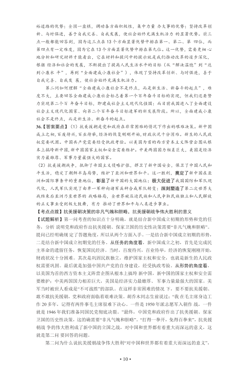
• 10 •
裕道路的优势；全国一盘棋，调动各方面积极性，集中力量办大事的优势；坚持改革创
新、与时俱进，善于自我完善、自我发展，使社会始终充满生机活力的显著优势。前三
点一般都能回答到，因为这三点在13 个方面显著优势中排在第一、第二、第四位，而
第四点有一定难度，因为它在13 个方面显著优势中排在第九位。这一优势，需要更细心
地分析和研究材料才能看出，它在材料和提问中的提示就是我们推动改革的逐步深化，
根据经济和社会的发展，不断提出了提高人民生活水平的目标（从“解决温饱”到“达
到小康水平”，再到“全面建成小康社会”），体现了坚持改革创新、与时俱进，善于
自我完善、自我发展，使社会始终充满生机活力。
第二问如何理解“全面建成小康社会不是终点，而是新生活、新奋斗的起点”，难
度不大, 主要回答全面建成小康社会标志着第一个百年奋斗目标的实现，但我们还要努
力实现第二个百年奋斗目标，即建成社会主义现代化强国；而目前我国进入了全面建设
社会主义现代化国家、向第二个百年奋斗目标进军的新发展阶段。所以，全面建成小康
社会不是终点，而是新生活、新奋斗的起点。
36.【答案要点】（1）抗美援朝是党和政府在非常困难的情况下作出的艰难决策。新中国
成立之初,百废待兴,百业待举,经济的恢复刚刚开始,财政状况十分困难。新生的人民政
权需要巩固。中国共产党需要经受执政考验。以美国为首的西方资本主义阵营企图从根
本上搞垮新中国,新中国国家主权和安全需要维护。中美两国国力相差巨大，美国是经济
实力最雄厚、军事力量最强大的国家。
（2）抗美援朝战争，抵御了帝国主义侵略扩张，捍卫了新中国安全，保卫了中国人民和
平生活，稳定了朝鲜半岛局势，维护了亚洲和世界和平。这一胜利，奠定了新中国在亚
洲和国际事务中的重要地位，彰显了新中国的大国地位；极大促进了我国国防和军队现
代化，人民军队实现了由单一军种向诸军兵种合成军队转变；深刻塑造了第二次世界大
战结束后亚洲乃至世界的战略格局，全世界被压迫民族和人民争取民族独立和人民解放
的正义事业受到极大鼓舞，有力推动了世界和平与人类进步事业。
【考点点拨】抗美援朝决策的非凡气魄和胆略，抗美援朝战争伟大胜利的意义
【试题解析】第一问考查的知识点十分明确，就是结合新中国成立初期的形势和党的任
务，分析说明党和政府作出抗美援朝、保家卫国的历史性决策需要“非凡气魄和胆略”。
提问已经明确规定了答题角度，所以从两个方面入手。一是结合新中国成立初期的形势，
二是结合新中国成立初期党的任务。从任务的角度看，新中国成立之初，首先是完成民
主革命的遗留任务，恢复国民经济。当时，百废待兴，百业待举，经济的恢复刚刚开始，
财政状况十分困难。其次是巩固民族独立，维护国家主权和安全，也就是新生的人民政
权需要巩固。最后就是加强中国共产党的自身建设，经受执政考验。从形势的角度看，
以美国为首的西方资本主义阵营企图从根本上搞垮新中国，新中国的国家主权和安全需
要维护；中美两国国力相差巨大，美国是经济实力最雄厚、军事力量最强大的国家。美
军当时被世人看成是“不可战胜”的部队。在这样非常困难的情况下，要不要抗美援朝、
敢不敢抗美援朝，党和政府面临着艰难决策。胡乔木同志生前说过：“我在毛主席身边工
作20 多年，记得有两件事毛主席很难下决心。一件是1950 年派志愿军入朝作战，一件
就是1946 年我们准备同国民党彻底决裂。”最终，中国党和政府作出了抗美援朝、保家
卫国的历史性决策，这的确需要“非凡气魄和胆略”。“打得一拳开，免得百拳来”，抗美援
朝战争的伟大胜利成了新中国的立国之战，对中国和世界都有着重大而深远的意义，这
就是第二问要回答的问题。
第二问为什么说抗美援朝战争伟大胜利“对中国和世界都有着重大而深远的意义”，
查看 / 复制本页文字
• 10 • 裕道路的优势；全国一盘棋，调动各方面积极性，集中力量办大事的优势；坚持改革创 新、与时俱进，善于自我完善、自我发展，使社会始终充满生机活力的显著优势。前三 点一般都能回答到，因为这三点在13 个方面显著优势中排在第一、第二、第四位，而 第四点有一定难度，因为它在13 个方面显著优势中排在第九位。这一优势，需要更细心 地分析和研究材料才能看出，它在材料和提问中的提示就是我们推动改革的逐步深化， 根据经济和社会的发展，不断提出了提高人民生活水平的目标（从“解决温饱”到“达 到小康水平”，再到“全面建成小康社会”），体现了坚持改革创新、与时俱进，善于 自我完善、自我发展，使社会始终充满生机活力。 第二问如何理解“全面建成小康社会不是终点，而是新生活、新奋斗的起点”，难 度不大, 主要回答全面建成小康社会标志着第一个百年奋斗目标的实现，但我们还要努 力实现第二个百年奋斗目标，即建成社会主义现代化强国；而目前我国进入了全面建设 社会主义现代化国家、向第二个百年奋斗目标进军的新发展阶段。所以，全面建成小康 社会不是终点，而是新生活、新奋斗的起点。 36.【答案要点】（1）抗美援朝是党和政府在非常困难的情况下作出的艰难决策。新中国 成立之初,百废待兴,百业待举,经济的恢复刚刚开始,财政状况十分困难。新生的人民政 权需要巩固。中国共产党需要经受执政考验。以美国为首的西方资本主义阵营企图从根 本上搞垮新中国,新中国国家主权和安全需要维护。中美两国国力相差巨大，美国是经济 实力最雄厚、军事力量最强大的国家。 （2）抗美援朝战争，抵御了帝国主义侵略扩张，捍卫了新中国安全，保卫了中国人民和 平生活，稳定了朝鲜半岛局势，维护了亚洲和世界和平。这一胜利，奠定了新中国在亚 洲和国际事务中的重要地位，彰显了新中国的大国地位；极大促进了我国国防和军队现 代化，人民军队实现了由单一军种向诸军兵种合成军队转变；深刻塑造了第二次世界大 战结束后亚洲乃至世界的战略格局，全世界被压迫民族和人民争取民族独立和人民解放 的正义事业受到极大鼓舞，有力推动了世界和平与人类进步事业。 【考点点拨】抗美援朝决策的非凡气魄和胆略，抗美援朝战争伟大胜利的意义 【试题解析】第一问考查的知识点十分明确，就是结合新中国成立初期的形势和党的任 务，分析说明党和政府作出抗美援朝、保家卫国的历史性决策需要“非凡气魄和胆略”。 提问已经明确规定了答题角度，所以从两个方面入手。一是结合新中国成立初期的形势， 二是结合新中国成立初期党的任务。从任务的角度看，新中国成立之初，首先是完成民 主革命的遗留任务，恢复国民经济。当时，百废待兴，百业待举，经济的恢复刚刚开始， 财政状况十分困难。其次是巩固民族独立，维护国家主权和安全，也就是新生的人民政 权需要巩固。最后就是加强中国共产党的自身建设，经受执政考验。从形势的角度看， 以美国为首的西方资本主义阵营企图从根本上搞垮新中国，新中国的国家主权和安全需 要维护；中美两国国力相差巨大，美国是经济实力最雄厚、军事力量最强大的国家。美 军当时被世人看成是“不可战胜”的部队。在这样非常困难的情况下，要不要抗美援朝、 敢不敢抗美援朝，党和政府面临着艰难决策。胡乔木同志生前说过：“我在毛主席身边工 作20 多年，记得有两件事毛主席很难下决心。一件是1950 年派志愿军入朝作战，一件 就是1946 年我们准备同国民党彻底决裂。”最终，中国党和政府作出了抗美援朝、保家 卫国的历史性决策，这的确需要“非凡气魄和胆略”。“打得一拳开，免得百拳来”，抗美援 朝战争的伟大胜利成了新中国的立国之战，对中国和世界都有着重大而深远的意义，这 就是第二问要回答的问题。 第二问为什么说抗美援朝战争伟大胜利“对中国和世界都有着重大而深远的意义”，
第 11 / 12 页
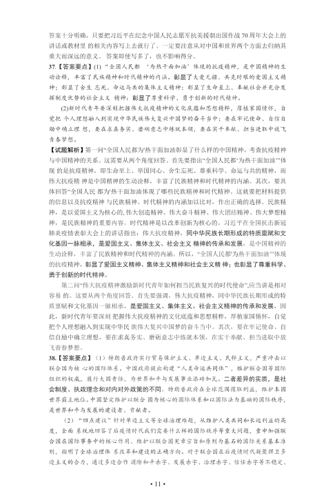
• 11 •
答案十分明确，只要把习近平在纪念中国人民志愿军抗美援朝出国作战70 周年大会上的
讲话或教材里的相关内容写上去就行了。一定要注意从对中国和世界两个方面去归纳其
重大而深远的意义。答案即使写多了，也不影响得分。
37.【答案要点】(1) “全国人民都‘为热干面加油’体现的抗疫精神，是中国精神的生
动诠释, 丰富了民族精神和时代精神的内涵。彰显了大爱无疆、共克时艰的爱国主义精
神；彰显了舍生忘死、命运与共的集体主义精神；彰显了生命至上、奉献社会并充分发
挥制度优势的社会主义精神；彰显了尊重科学、勇于创新的时代精神。
(2)新时代青年要深刻把握伟大抗疫精神的文化底蕴和思想精粹，厚植家国情怀，自
觉把个人理想融入到实现中华民族伟大复兴中国梦的奋斗当中；要在牢记使命、自信自
励中确立理想，要在求真务实、磨砺意志中练就本领，要在实干奉献、担当进取中放飞
青春梦想。
【试题解析】第一问“全国人民都为'热干面加油彰显了什么样的中国精神，考查抗疫精神
与中国精神的关系。这需要从两个角度回答。首先要指出“全国人民都‘为热干面加油’”体
现的是抗疫精神，即生命至上、举国同心、舍生忘死、尊重科学、命运与共的精神，而
伟大抗疫精神是中国精神的生动诠释，丰富了民族精神和时代精神的内涵。其次，要具
体回答“全国人民都为'热干面加油体现了哪些民族精神和时代精神。这就要把材料提供
的信息以及抗疫精神与民族精神、时代精神的内涵加以比对，作出正确的选择。民族精
神，是以爱国主义为核心的, 伟大创造精神、伟大奋斗精神、伟大团结精神、伟大梦想精
神，是民族精神的重要内容。时代精神是以改革创新为核心的。习近平在全国抗击新冠
肺炎疫情表彰大会上的讲话指出：伟大抗疫精神，同中华民族长期形成的特质禀赋和文
化基因一脉相承，是爱国主义、集体主义、社会主义精神的传承和发展，是中国精神的
生动诠释，丰富了民族精神和时代精神的内涵。所以，“全国人民都'为热干面加油’”体现
的抗疫精神，彰显了爱国主义精神、集体主义精神和社会主义精神；也彰显了尊重科学、
勇于创新的时代精神。
第二问“伟大抗疫精神激励新时代青年如何担当民族复兴的时代使命”,应当讲是相对
容易的。这要从两个角度回答。首先要强调，伟大抗疫精神，同中华民族长期形成的特
质禀赋和文化基因一脉相承，是爱国主义、集体主义、社会主义精神的传承和发展，因
此，新时代青年要深刻把握伟大抗疫精神的文化底蕴和思想精粹，厚植家国情怀，自觉
把个人理想融入到实现中华民族伟大复兴中国梦的奋斗当中。其次，要在牢记使命、自
信自励中确立理想，要在求真务实、磨砺意志中练就本领，在实干奉献、担当进取中放
飞青春梦想。
38.【答案要点】（1）特朗普政府实行贸易保护主义、单边主义、民粹主义，严重冲击以
联合国为核心的国际体系。中国政府提出构建“人类命运共同体”，维护联合国等国际
组织的权威，履行大国责任，为世界和平与发展事业添砖加瓦。二者差异的实质，是社
会制度、执政理念和对内对外政策的不同。特朗普政府在全球范围攫取利益，维护本国
世界霸主地位。中国坚定维护以联合国为核心的国际体系和以国际法为基础的国际秩序，
是世界和平与发展的建设者、贡献者。
（2）“四点建议”针对单边主义等全球治理难题，从维护人类共同和长远利益的高
度，全面系统地回答了后疫情时代我们需要什么样的国际秩序等重大问题，重申加强联
合国在国际事务中的核心作用、维护以联合国宪章宗旨和原则为基石的国际关系基本准
则，指明了全球治理体系改革和建设的正确方向。对于联合国在后疫情时代凝聚捍卫多
边主义的合力，通过多边合作消除和平赤字、发展赤字、治理赤字、信任赤字等不稳定、
查看 / 复制本页文字
• 11 • 答案十分明确，只要把习近平在纪念中国人民志愿军抗美援朝出国作战70 周年大会上的 讲话或教材里的相关内容写上去就行了。一定要注意从对中国和世界两个方面去归纳其 重大而深远的意义。答案即使写多了，也不影响得分。 37.【答案要点】(1) “全国人民都‘为热干面加油’体现的抗疫精神，是中国精神的生 动诠释, 丰富了民族精神和时代精神的内涵。彰显了大爱无疆、共克时艰的爱国主义精 神；彰显了舍生忘死、命运与共的集体主义精神；彰显了生命至上、奉献社会并充分发 挥制度优势的社会主义精神；彰显了尊重科学、勇于创新的时代精神。 (2)新时代青年要深刻把握伟大抗疫精神的文化底蕴和思想精粹，厚植家国情怀，自 觉把个人理想融入到实现中华民族伟大复兴中国梦的奋斗当中；要在牢记使命、自信自 励中确立理想，要在求真务实、磨砺意志中练就本领，要在实干奉献、担当进取中放飞 青春梦想。 【试题解析】第一问“全国人民都为'热干面加油彰显了什么样的中国精神，考查抗疫精神 与中国精神的关系。这需要从两个角度回答。首先要指出“全国人民都‘为热干面加油’”体 现的是抗疫精神，即生命至上、举国同心、舍生忘死、尊重科学、命运与共的精神，而 伟大抗疫精神是中国精神的生动诠释，丰富了民族精神和时代精神的内涵。其次，要具 体回答“全国人民都为'热干面加油体现了哪些民族精神和时代精神。这就要把材料提供 的信息以及抗疫精神与民族精神、时代精神的内涵加以比对，作出正确的选择。民族精 神，是以爱国主义为核心的, 伟大创造精神、伟大奋斗精神、伟大团结精神、伟大梦想精 神，是民族精神的重要内容。时代精神是以改革创新为核心的。习近平在全国抗击新冠 肺炎疫情表彰大会上的讲话指出：伟大抗疫精神，同中华民族长期形成的特质禀赋和文 化基因一脉相承，是爱国主义、集体主义、社会主义精神的传承和发展，是中国精神的 生动诠释，丰富了民族精神和时代精神的内涵。所以，“全国人民都'为热干面加油’”体现 的抗疫精神，彰显了爱国主义精神、集体主义精神和社会主义精神；也彰显了尊重科学、 勇于创新的时代精神。 第二问“伟大抗疫精神激励新时代青年如何担当民族复兴的时代使命”,应当讲是相对 容易的。这要从两个角度回答。首先要强调，伟大抗疫精神，同中华民族长期形成的特 质禀赋和文化基因一脉相承，是爱国主义、集体主义、社会主义精神的传承和发展，因 此，新时代青年要深刻把握伟大抗疫精神的文化底蕴和思想精粹，厚植家国情怀，自觉 把个人理想融入到实现中华民族伟大复兴中国梦的奋斗当中。其次，要在牢记使命、自 信自励中确立理想，要在求真务实、磨砺意志中练就本领，在实干奉献、担当进取中放 飞青春梦想。 38.【答案要点】（1）特朗普政府实行贸易保护主义、单边主义、民粹主义，严重冲击以 联合国为核心的国际体系。中国政府提出构建“人类命运共同体”，维护联合国等国际 组织的权威，履行大国责任，为世界和平与发展事业添砖加瓦。二者差异的实质，是社 会制度、执政理念和对内对外政策的不同。特朗普政府在全球范围攫取利益，维护本国 世界霸主地位。中国坚定维护以联合国为核心的国际体系和以国际法为基础的国际秩序， 是世界和平与发展的建设者、贡献者。 （2）“四点建议”针对单边主义等全球治理难题，从维护人类共同和长远利益的高 度，全面系统地回答了后疫情时代我们需要什么样的国际秩序等重大问题，重申加强联 合国在国际事务中的核心作用、维护以联合国宪章宗旨和原则为基石的国际关系基本准 则，指明了全球治理体系改革和建设的正确方向。对于联合国在后疫情时代凝聚捍卫多 边主义的合力，通过多边合作消除和平赤字、发展赤字、治理赤字、信任赤字等不稳定、
第 12 / 12 页
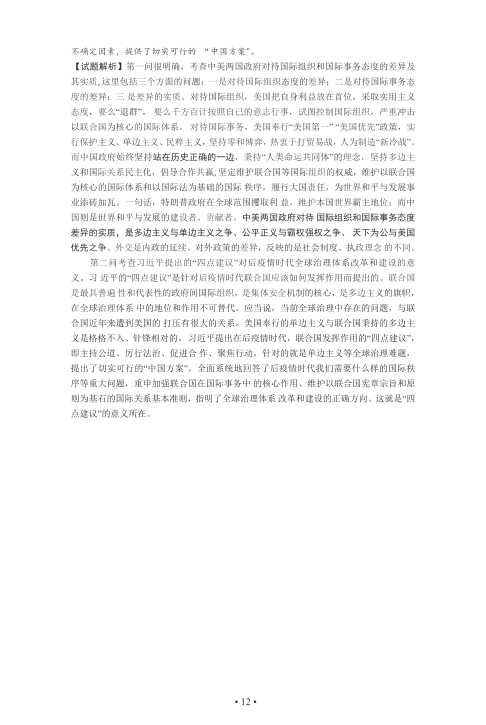
• 12 •
不确定因素，提供了切实可行的“中国方案"。
【试题解析】第一问很明确，考查中美两国政府对待国际组织和国际事务态度的差异及
其实质, 这里包括三个方面的问题：一是对待国际组织态度的差异；二是对待国际事务态
度的差异；三是差异的实质。对待国际组织，美国把自身利益放在首位，采取实用主义
态度，要么“退群”，要么千方百计按照自己的意志行事，试图控制国际组织，严重冲击
以联合国为核心的国际体系。对待国际事务，美国奉行“美国第一” “美国优先”政策，实
行保护主义、单边主义、民粹主义，坚持零和博弈，热衷于打贸易战，人为制造“新冷战”。
而中国政府始终坚持站在历史正确的一边，秉持“人类命运共同体”的理念，坚持多边主
义和国际关系民主化，倡导合作共赢, 坚定维护联合国等国际组织的权威，维护以联合国
为核心的国际体系和以国际法为基础的国际秩序，履行大国责任，为世界和平与发展事
业添砖加瓦。一句话，特朗普政府在全球范围攫取利益，维护本国世界霸主地位；而中
国则是世界和平与发展的建设者、贡献者。中美两国政府对待国际组织和国际事务态度
差异的实质，是多边主义与单边主义之争、公平正义与霸权强权之争、天下为公与美国
优先之争。外交是内政的延续。对外政策的差异，反映的是社会制度、执政理念的不同。
第二问考查习近平提出的“四点建议”对后疫情时代全球治理体系改革和建设的意
义。习近平的“四点建议”是针对后疫情时代联合国应该如何发挥作用而提出的。联合国
是最具普遍性和代表性的政府间国际组织，是集体安全机制的核心，是多边主义的旗帜，
在全球治理体系中的地位和作用不可替代。应当说，当前全球治理中存在的问题，与联
合国近年来遭到美国的打压有很大的关系。美国奉行的单边主义与联合国秉持的多边主
义是格格不入、针锋相对的。习近平提出在后疫情时代，联合国发挥作用的“四点建议”，
即主持公道、厉行法治、促进合作、聚焦行动，针对的就是单边主义等全球治理难题，
提出了切实可行的“中国方案”，全面系统地回答了后疫情时代我们需要什么样的国际秩
序等重大问题，重申加强联合国在国际事务中的核心作用、维护以联合国宪章宗旨和原
则为基石的国际关系基本准则，指明了全球治理体系改革和建设的正确方向。这就是“四
点建议”的意义所在。
查看 / 复制本页文字
• 12 • 不确定因素，提供了切实可行的“中国方案"。 【试题解析】第一问很明确，考查中美两国政府对待国际组织和国际事务态度的差异及 其实质, 这里包括三个方面的问题：一是对待国际组织态度的差异；二是对待国际事务态 度的差异；三是差异的实质。对待国际组织，美国把自身利益放在首位，采取实用主义 态度，要么“退群”，要么千方百计按照自己的意志行事，试图控制国际组织，严重冲击 以联合国为核心的国际体系。对待国际事务，美国奉行“美国第一” “美国优先”政策，实 行保护主义、单边主义、民粹主义，坚持零和博弈，热衷于打贸易战，人为制造“新冷战”。 而中国政府始终坚持站在历史正确的一边，秉持“人类命运共同体”的理念，坚持多边主 义和国际关系民主化，倡导合作共赢, 坚定维护联合国等国际组织的权威，维护以联合国 为核心的国际体系和以国际法为基础的国际秩序，履行大国责任，为世界和平与发展事 业添砖加瓦。一句话，特朗普政府在全球范围攫取利益，维护本国世界霸主地位；而中 国则是世界和平与发展的建设者、贡献者。中美两国政府对待国际组织和国际事务态度 差异的实质，是多边主义与单边主义之争、公平正义与霸权强权之争、天下为公与美国 优先之争。外交是内政的延续。对外政策的差异，反映的是社会制度、执政理念的不同。 第二问考查习近平提出的“四点建议”对后疫情时代全球治理体系改革和建设的意 义。习近平的“四点建议”是针对后疫情时代联合国应该如何发挥作用而提出的。联合国 是最具普遍性和代表性的政府间国际组织，是集体安全机制的核心，是多边主义的旗帜， 在全球治理体系中的地位和作用不可替代。应当说，当前全球治理中存在的问题，与联 合国近年来遭到美国的打压有很大的关系。美国奉行的单边主义与联合国秉持的多边主 义是格格不入、针锋相对的。习近平提出在后疫情时代，联合国发挥作用的“四点建议”， 即主持公道、厉行法治、促进合作、聚焦行动，针对的就是单边主义等全球治理难题， 提出了切实可行的“中国方案”，全面系统地回答了后疫情时代我们需要什么样的国际秩 序等重大问题，重申加强联合国在国际事务中的核心作用、维护以联合国宪章宗旨和原 则为基石的国际关系基本准则，指明了全球治理体系改革和建设的正确方向。这就是“四 点建议”的意义所在。